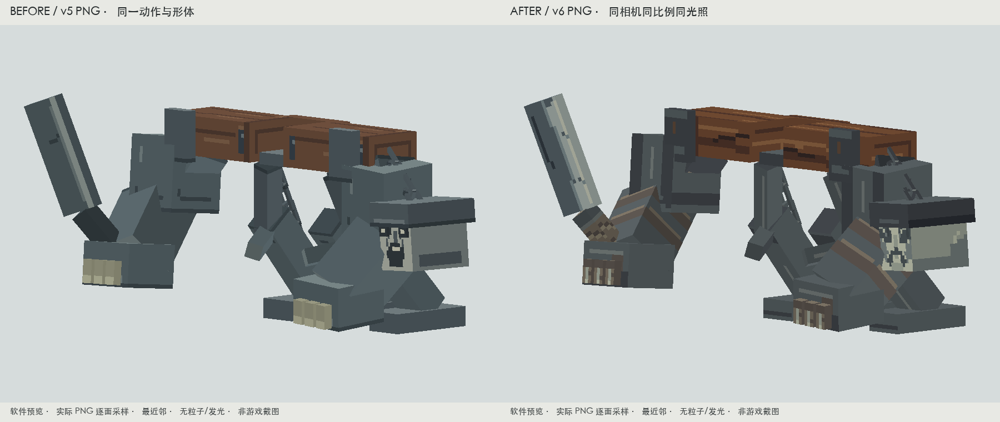

刑枷悬首
dynasty:xianzhen_duantoujiang脸部原有大黑块和亮铁框互相干扰；手、甲与刑具的分区接近，刀面缺少切削方向。
重画额部、斜眼窝、紧咬口部与下颌，压低盔框；刑木沿横梁连续排纹，端面单独绘制。刑铁、内侧连接、皮绑和指组分开；刀背压暗、刃口连续，握持段独立包覆。
实际参考：Goety Necromancer：骨色主体与深色包围的明度关系，用在悬首和指组；Goety stripped_haunted_log：长轴纹路与端面分工，用在现有刑木，未沿用其像素和配色。同相机、同姿态、同比例对照
左：本轮前的v5；右：本轮v6。软件逐面采样真实PNG，无粒子或发光。仅替换贴图，画面取景保持一致。

面部近景 · 左旧右新
武器近景 · 左旧右新
刑枷连接近景 · 左旧右新
实机 · 普通光照、玩家与石砖参照
实机侧背、移动、蓄势、接触与恢复
完整原动作回放
完整检查 idle / walk / hurt / roar / spin / throw / death。吼击24 tick、旋转26 tick、抛掷20 tick的既有姿态已实机取样。转身时背面自然遮住脸，正向蓄势和恢复时悬首仍可辨认。
以下为软件逐面贴图回放。每段从0至结束，固定相机和尺度；点击展开逐帧表可以检查全部40帧。
idle · 4.0秒 · 完整回放
查看全部40帧（原尺寸）
walk · 2.6秒 · 完整回放
查看全部40帧（原尺寸）
hurt · 0.45秒 · 完整回放
查看全部40帧（原尺寸）
roar · 2.5秒 · 完整回放
查看全部40帧（原尺寸）
spin · 3.85秒 · 完整回放
查看全部40帧（原尺寸）
throw · 2.5秒 · 完整回放
查看全部40帧（原尺寸）
death · 3.5秒 · 完整回放
查看全部40帧（原尺寸）
正面、侧面、背面与弱光
原始PNG、4倍最近邻与UV方向
256×256图集、既有16 texel/block标尺保留。UV未调整；检查图仅在预览中使用。
玩家视高与观察距离
1.8m玩家、1m石砖和木材 / 软件参照10米 / 软件透视18米 / 软件透视28米 / 软件透视 现有结构与验证边界：原模型没有独立下颚；本轮口部仅为贴图，不声称可以张嘴。抛掷仍沿用已有技能，未增加飞头或新刀种。
兵煞残甲
dynasty:rebel_general上层护甲与下层巨手重复使用箱体描边，外甲和内部梁同亮；小块黄眼缺少周围面甲支持。
用盔口暗面、折叠面甲和额部建立观察方向；上层甲保留跨前侧面的暗朱旧漆，下层巨手突出护腕和接触磨损。内部梁比外甲更深，普通支撑收敛；长兵刃区分刀背、刃面、刃口与握持段。
实际参考：Cataclysm Ignis 原始PNG：主甲色区、暗连接和兵刃之间的主次，落实到既有红色身份、破甲臂和长兵刃；未复制纹章或角色外观。同相机、同姿态、同比例对照
左：本轮前的v5；右：本轮v6。软件逐面采样真实PNG，无粒子或发光。仅替换贴图，画面取景保持一致。
面部近景 · 左旧右新
面部 / front / unlit / 同条件面部 / front / lit / 同条件面部 / front / gray / 同条件面部 / 45 / unlit / 同条件面部 / 45 / lit / 同条件面部 / 45 / gray / 同条件 武器近景 · 左旧右新
武器 / front / unlit / 同条件武器 / front / lit / 同条件武器 / front / gray / 同条件武器 / 45 / unlit / 同条件武器 / 45 / lit / 同条件武器 / 45 / gray / 同条件 上下甲面近景 · 左旧右新
上下甲面 / front / unlit / 同条件上下甲面 / front / lit / 同条件上下甲面 / front / gray / 同条件上下甲面 / 45 / unlit / 同条件上下甲面 / 45 / lit / 同条件上下甲面 / 45 / gray / 同条件 实机 · 普通光照、玩家与石砖参照
front / Minecraft实机45 / Minecraft实机 实机侧背、移动、蓄势、接触与恢复
side / -1 tick / Minecraft实机back / -1 tick / Minecraft实机walk / 10 tick / Minecraft实机attack-tell / 9 tick / Minecraft实机attack-contact / 12 tick / Minecraft实机attack-recovery / 22 tick / Minecraft实机 完整原动作回放
完整检查 idle / walk / hurt / attack / cast / death。普攻12 tick接触前后的持刀侧、甲臂和恢复已实机取样。保留全部动作文件。
以下为软件逐面贴图回放。每段从0至结束，固定相机和尺度；点击展开逐帧表可以检查全部40帧。
idle · 4.0秒 · 完整回放
完整循环 / 软件预览开始、蓄势、主要动作、接触、恢复取样 查看全部40帧（原尺寸）
walk · 2.1秒 · 完整回放
完整循环 / 软件预览开始、蓄势、主要动作、接触、恢复取样 查看全部40帧（原尺寸）
hurt · 0.45秒 · 完整回放
完整循环 / 软件预览开始、蓄势、主要动作、接触、恢复取样 查看全部40帧（原尺寸）
attack · 1.2秒 · 完整回放
完整循环 / 软件预览开始、蓄势、主要动作、接触、恢复取样 查看全部40帧（原尺寸）
cast · 1.5秒 · 完整回放（资源片段，未绑定具体法术）
完整循环 / 软件预览开始、蓄势、主要动作、接触、恢复取样 查看全部40帧（原尺寸）
death · 0.95秒 · 完整回放
完整循环 / 软件预览开始、蓄势、主要动作、接触、恢复取样 查看全部40帧（原尺寸）
正面、侧面、背面与弱光
front-unlit / 软件逐面PNGside-unlit / 软件逐面PNGback-unlit / 软件逐面PNGthree-quarter-unlit / 软件逐面PNGfront-gray / 软件逐面PNGthree-quarter-gray / 软件逐面PNGdim / 软件逐面PNG 原始PNG、4倍最近邻与UV方向
256×256图集、既有16 texel/block标尺保留。UV未调整；检查图仅在预览中使用。
玩家视高与观察距离
1.8m玩家、1m石砖和木材 / 软件参照10米 / 软件透视18米 / 软件透视28米 / 软件透视 现有结构与验证边界：cast 为保留的资源片段，其抬甲阶段会遮住部分盔口；当前通用生产控制器未将它绑定具体法术，页面作为资源回放单列，未改技能或臆称完成法术同步。非空主手装备组合未逐项测试。
验证与实际参考
运行绑定和UV未发现本轮需要修复的错面、共享岛或尺寸错误。根因主要在绘制方式：外框、主体和连接的处理过于接近，缺少部位职责。预览使用逐面最近邻PNG采样；原色视图不叠加材质乘色。
两张PNG、两份bbmodel内嵌贴图及权威绘制源已更新。重复导出字节一致；几何、UV、骨架和全部动画文件逐字节保持。其余6只与锤链资源保持。未新增局部几何。
13段完整资源动画已检查；18个实机状态核对当前PNG、模型和动画哈希。实机来自隔离测试世界中的正式注册实体、Renderer和控制器。自然遭遇、多人同步与非空主手装备组合未在本轮追加验证。
结果与实机记录 · 离线资源检查 · 重复导出 · 构建记录
实际看过的原始素材与借鉴部位
Goety Necromancer 原PNG：最近邻放大检查骨色与深色包围的关系，用于悬首与指组的明度层级。Goety stripped_haunted_log 原PNG：查看沿轴纹路，刑木按自身朝向和受力点重新绘制。源码快照对应Goety 2.5.58.4 / Minecraft 1.20.1。
Cataclysm Ignis 原PNG：最近邻查看甲面色区、暗连接和兵器分工，落实到兵煞残甲的上层残漆、下层接触甲面和刀刃。沿用上轮看过的Ignis作者展示主次观察，宣传光照不作为基础贴图反射依据。
仅研究材质组织，没有复制外部像素、纹章、UV、模型或动画。本轮未声称研究未核实的整合包角色。